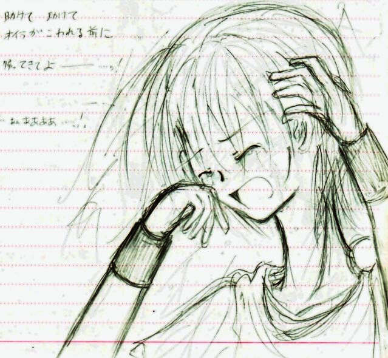

危険度レベルはかなりお高め。
…とはいえ、アナログスキャンの際に大分潰れたので、
それほどでは無いとも思いますが…＾＾；
前回上手くできなかった、「慟哭」にリベンジ。
…前回より は、マシ…か な？；
大塚愛さんの、「プラネタリウム」の終盤の盛り上がりを聞きながら描いておりました。
覚悟の出来た方は、どうぞいってらっしゃいませ。
＊———————＊———————＊
どうしてどうしてどうしてどうして
最後に君はいつもオイラを置いていくの
行かないで行かないで戻ってきて連れて行って
帰ってきて いかないで ———— …！
会いたい会いたい会いたい会いたい
君がいないなんて君がいないなんて
信じない信じたくない信じてたまるか ——
助けて 助けて
オイラが壊れる前に
帰ってきてよ ———— …ッ！！
「…あぁあああああ……っ！！」
＊———————＊———————＊

もっと上手くスキャンは出来ないものか……；
薄い線が消えすぎだ、ううぅう；
とりあえず、時期的にはこないだＵＰしたものと同じです。
ファイナルステージ〜ラストエピソードの間辺り。
普段は少しずつ落ち着いてきていたのですが、夜中とか、一人になってしまった時、何かあったんですよ。きっと。
もしくは、仲間の為にも耐えていた何かが、一人になってふとしたキッカケで崩壊した、とか。
なんで一人になってたのかは、皆様のご想像にお任せします（笑）
フィールも、まだ１４歳ですから。大泣きしても当然なんですよね、きっと。
……辛いコト背負わせてごめんねぇ…（苦笑。
…まあ、サイト版でもきっとこういう流れになるのでしょうけｄ（スターシューティング襲来。
２００６．５．２７ ＵＰ